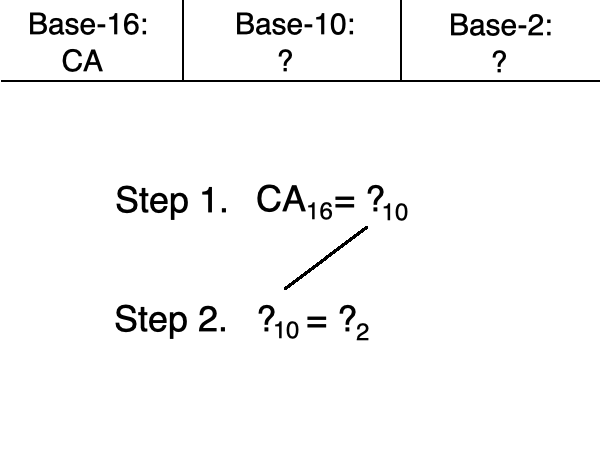
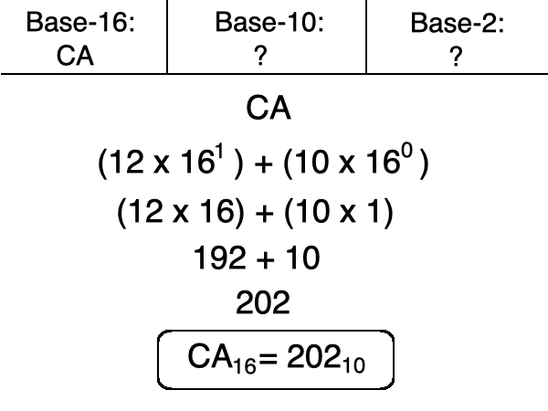
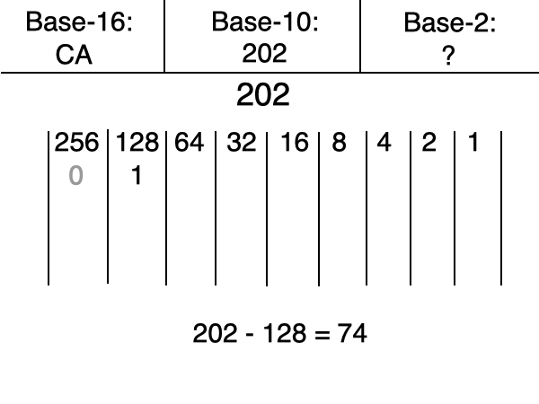
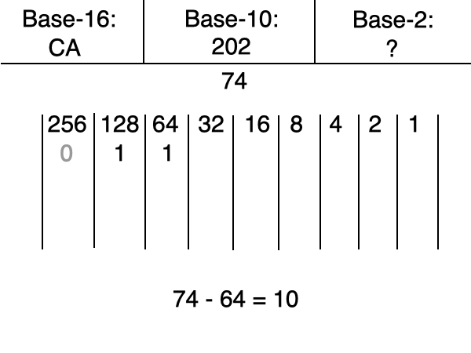
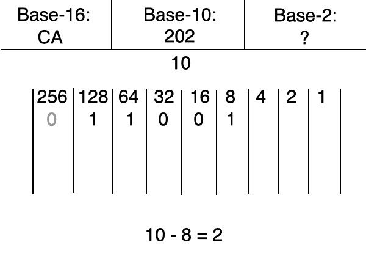
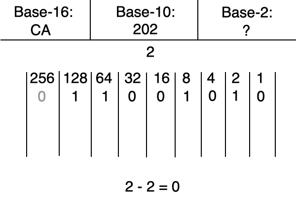
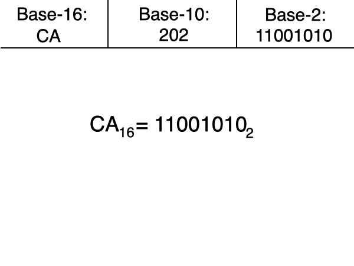

you smart good
Programming Concepts
Two-step conversions, continued
This process gets reversed if you want to convert a base-16 number to base-2:
Step 1. from hexadecimal to base-10, then
Step 2. from base-10 to binary
Let's convert CA in hexadecimal to binary.

Step 1. Convert from hexadecimal to base-10.
We learned in previous lessons that in base-16, C=12 and A=10.
Knowing this, we can input these numbers into our scientific equation to find that:
CA16 = 20210

Step 2. Convert from base-10 to binary.
When looking at the powers of 2, we see that 256 is larger than 202, so we will not use that column.
128 fits into 202 without going over, so we will put a 1 in its column and subtract 128 from 202. Our remainder is 74.

Continuing with the remainder of 74, the next largest power of 2 is 64. 64 fits into 74 without going over. So we can put a 1 in the 64s column and subtract it from 74.
We now have a remainder of 10.

32 and 16 are larger than the remainder of 10, so we can input 0s into those columns.

4 is larger than the remainder of 2, so we continue to the 2s column. When we subtract 2 from 2, we get a remainder of 0. This means that we can input a 0 into any remaining columns.

We now know that CA in hexadecimal equals 11001010 in binary!
